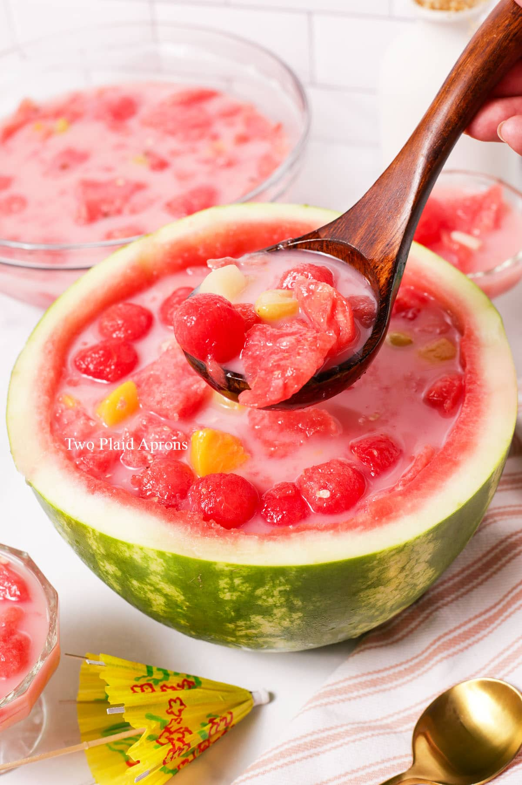
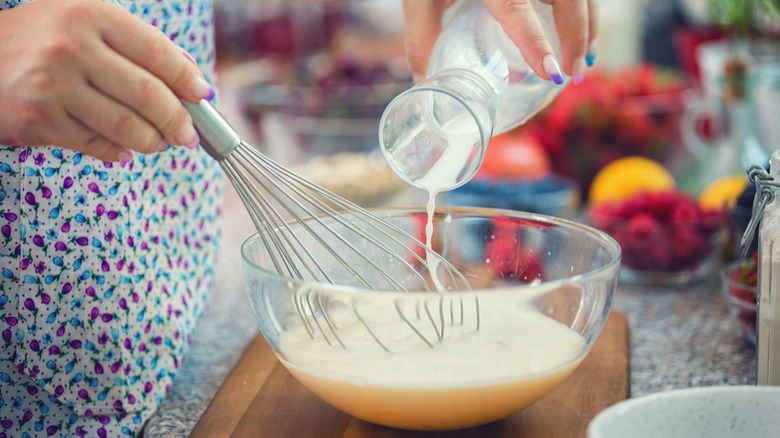

Hwachae (Korean Fruit Punch)
Hwachae is a traditional fruit punch from Korea, dating back to 57 BC - 668 AD. Modern day hwachae is often made with strawberry milk and some kind of carbonated beverage, such as Sprite or cider, and filled with chopped-up fruits. It is also common for hwachae to be served inside a watermelon. Recently, hwachae has been going viral on the internet, praised for being a refreshing and hydrating treat.
(Recipe adapted from: beyondkimchee Korean Watermelon Punch Recipe)

Ingredients:
(For 4-6 servings)
- 1 large watermelon, preferably seedless
- 14 ounces, or 1 3/4 cups, of strawberry milk (Recommended brand: Binggrae)
- 12 ounces, or 1 1/2 cups, of carbonated beverage (Sprite, 7Up, etc)
- 1 cup ice cubes
- 1 can (14 ounces) fruit cocktail, drained
- 1 1/2 cups fresh fruit (berries, melon, peaches, etc)
- (Optional: 1/2 cup chopped up jellies. Any jelly works--coconut, lychee, mango, etc)
Materials:
- any large mixing spoon
- a large ladle
- a melon baller
Instructions:
- Cut the watermelon in half and use the melon baller to carefully scoop out as much of the fruit from the watermelon as possible while keeping the outer shell intact. We will be using the hollowed out watermelon halves to pour the hwachae into. Immediately store the hollowed out watermelon halves in the fridge to keep cool
- Chop up your fruits into bite sized pieces. Roughly 1/2" cubes is fine.
- Mix the milk and carbonated beverage of choice in another bowl and stir together using your mixing spoon.

- Take the watermelon halves out of the fridge and pour the milk + carbonated beverage mixture into it.
- Open the can of fruit cocktail, and pour it in, along with the ice, chopped up fruit, watermelon balls, and jellies if adding.
- To serve, ladle the punch into individual serving bowls. Serve immediately or store in the fridge for up to 24 hours